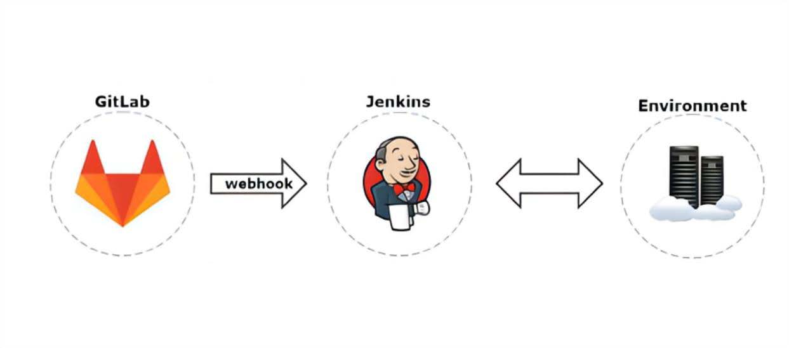
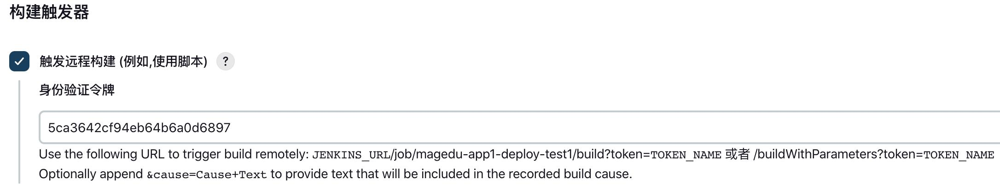
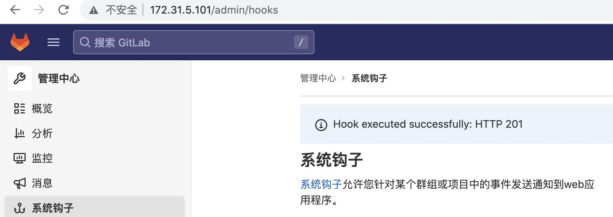

Jenkins触发器简介及实现
-
Jenkins触发器分类：
-
远程触发构建：
- 基于API远程触发
-
其他工程构建后触发：
- 执行完成A工程再执行B工程
-
定时构建：
- 基于定时任务构建
-
轮询SCM(source code management)：
- 每间隔指定的时间去检查代码仓库是否变更，如果变更就执行构建
-

-
系统管理-管理插件-可选插件-Gitlab
-
注意事项：
-
在 jenkins 系统管理--全局安全设置，认证改为登录用户可以做任何事情且匿名用户具有可读权限
-
启用代理兼容、取消跨站请求伪造保护的勾选项(早期jenkins)
-
Gitlab Hook Plugin以纯文本形式存储和显示GitLab API令牌
-
-
生成认证 token 并验证：
-
root@jenkins:~# openssl rand -hex 12
- 5ca3642cf94eb64b6a0d6897
-
-
Jenkins 配置远程触发
- Jenkins 全局安全配置需要勾选 “匿名用户具有可读权限”

-
curl测试
-
root@gitlab:~# curl --head http://172.31.5.102:8080/job/magedu-app1-deploy-test1/build?token=5ca3642cf94eb64b6a0d6897
- HTTP/1.1 201 Created
- Date: Mon, 24 Oct 2022 09:41:50 GMT
-
-
gitlab 自动触发：

-
python 测试远程触发：
- 管理员--系统钩子(System Hooks)
pip3 install jenkinsapi
cat xxx.py
#!/usr/bin/env python
#coding:utf-8
#Author:Zhang ShiJie
from jenkinsapi.jenkins import Jenkins
conn = Jenkins('http://172.31.5.102:8080', username='jenkinsadmin', password='zhang@123',useCrumb='9c88c3b473854c7c8bb28543')
conn.build_job('magedu-app1-deploy-test1')
#conn.build_job('magedu-web1-deploy')
~# python3 xxx.py
手动实现镜像更新:
基于代码 frontend.tar.gz 演示代码更新流程
1.在开发机器(gitlab本机为例)编写代码：
ubuntu-dockerfile-case中的frontend.tar.gz文件解压并上传至gitlab app1项目
2.在镜像构建服务器(jenkins)clone app1项目并打包:
root@jenkins:~# cd /data/magedu/
root@jenkins:/data/magedu# git clone git@172.31.5.101:magedu/app1.git
root@jenkins:/data/magedu# cd app1/
root@jenkins:/data/magedu/app1# tar czvf frontend.tar.gz --exclude=.git --exclude=.gitignore --exclude=README.md ./
root@jenkins:/data/magedu/app1# scp frontend.tar.gz 172.31.6.201:/opt/ubuntu-dockerfile/
3.在镜像构建服务器(docker-server1)构建镜像：
root@docker-server1:/opt/ubuntu-dockerfile# bash build-command.sh # 构建并上传镜像到harbor镜像仓库
4.在web服务器(docker-server2)基于docker-compsoe运行服务
root@docker-server2:/data/magedu-app1# docker-compose pull
root@docker-server2:/data/magedu-app1# docker-compose up -d